All 6 NeetCode 150 sliding window problems, one picture each
Open a problem to see its picture: the question, the main trick, how we think through the example, the full code, and why it works.
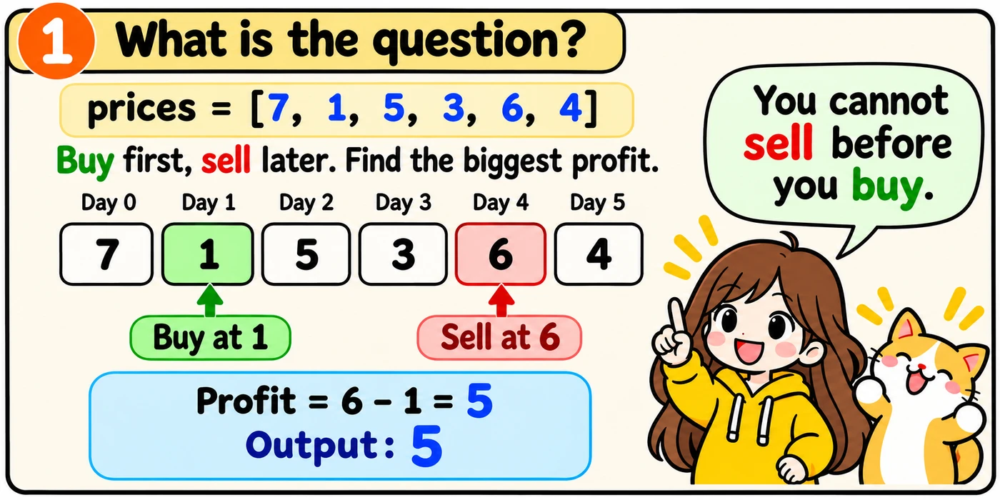
We buy once and sell later. We want the biggest profit. If no trade earns money, we return 0.
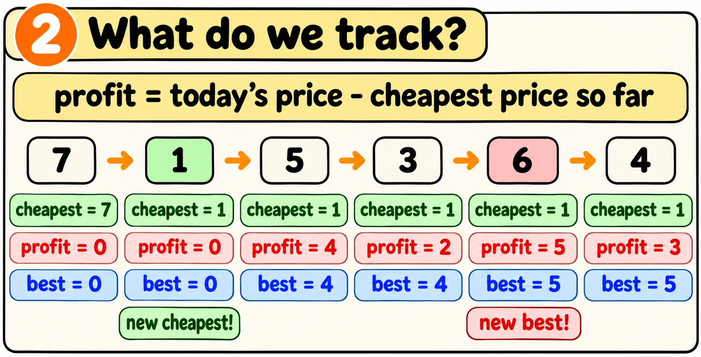
We walk through the prices once. The variable cheapest is the lowest price so far. Selling today gives price - cheapest.
Here is how I'll explain the solution in an interview. Tap Build it to write the code one step at a time and see what I'll say.
The one idea to remember
Write the whole function from memory. The comments describe each job. A failed test gives a hint.
The first and last lines are written. Fill both gaps inside the loop. Start each gap at the left edge.
def maxProfit(prices): cheapest = prices[0] best = 0 for price in prices:
return best
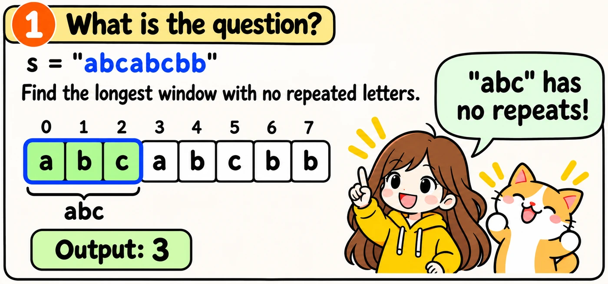
We want the longest group of letters next to each other. No letter can repeat.
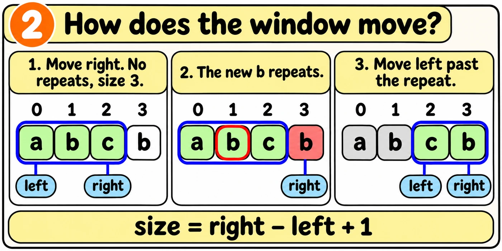
What do we need to remember?
First, let's choose the variables. Tap each question to see the answer.
We remember the letters in the window. The set seen holds them and is fast to check.
The variable left shows where the window starts. The variable right shows where the window ends.
We use best to remember the longest window. The current window length is right - left + 1.
Let's run the code with the short string "abcb". Press Next to see each step.
def lengthOfLongestSubstring(s): seen = set() left = 0 best = 0 for right in range(len( # a repeat: drop from the left while s[right] in seen: seen.remove(s)): s[left]) left += 1 seen.add(s[right]) size = right - left + 1 best = max(best, size) return best
Here is how I'll explain the solution in an interview. Tap Build it to write each part and see what I'll say.
The one idea to remember
Write the whole function from memory. The comments explain each job. A failed test gives you a hint, not the answer.
The start and the last line are already written. Fill in the two gaps inside the loop. Start each gap at the left edge of its box.
def lengthOfLongestSubstring(s): seen = set() left = 0 best = 0 for right in range(len( s)):
return best
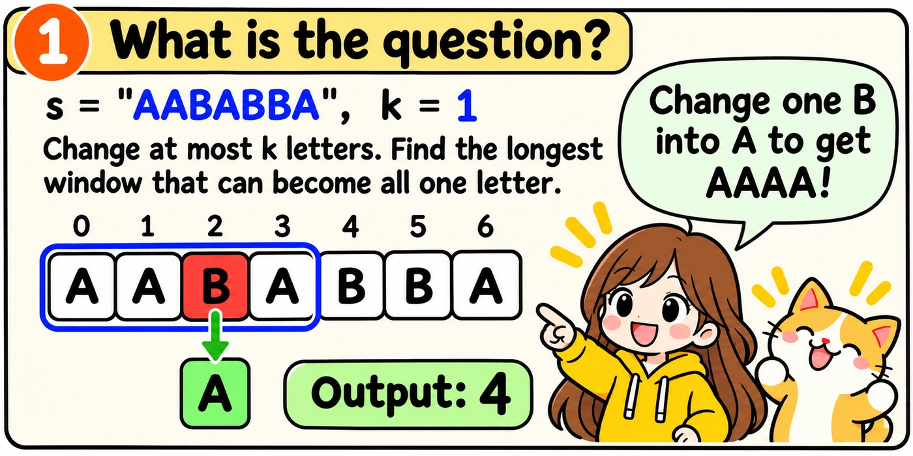
We may make at most k changes. We want the longest window that can become one repeated letter.
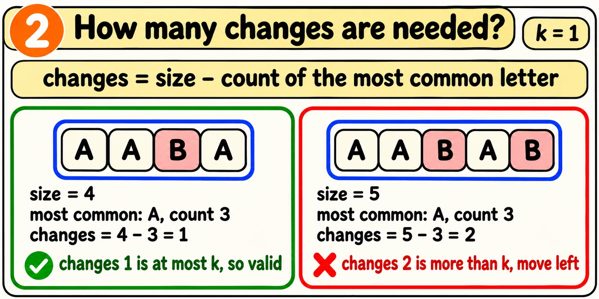
We keep the most common letter and change the rest. The window needs size - most changes. The dictionary count stores each letter's count in the window.
If the window needs more than k changes, we drop letters from the left. Watch the code run on "AABAB" with k = 1. Press Next for each step.
def characterReplacement(s, k): count = {} left = 0 best = 0 for right in range(len( letter = s[right] if letter not in count: count[letter] = 0 count[letter] += 1 size = right - left + 1 most = max(s)): count.values( # too many changes: shrink while size - most > k: count[s[left]] -= 1 left += 1 size = size - 1 most = max()) count.values( best = max()) best, size) return best
Here is how I'll explain the solution in an interview. Tap Build it to write the code one step at a time and see what I'll say.
The one idea to remember
Write the whole function from memory. The comments describe each job. A failed test gives a hint.
The counting and final lines are written. Fill both gaps. Start each gap at the left edge.
def characterReplacement(s, k): count = {} left = 0 best = 0 for right in range(len( letter = s[right] if letter not in count: count[letter] = 0 count[letter] += 1s)):
best = max(best, size) return best
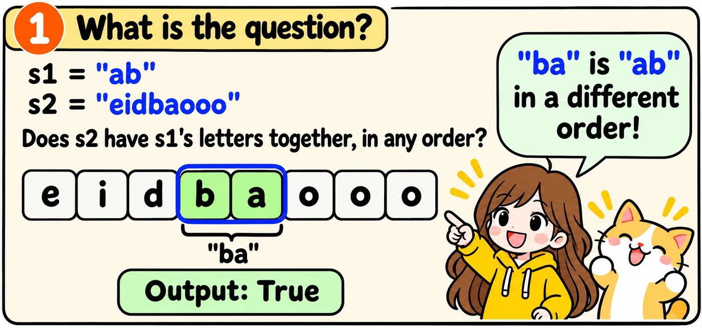
We check whether s2 contains all the letters of s1 together, in any order.
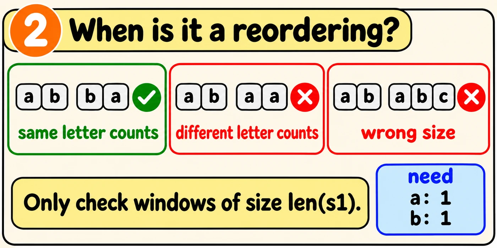
Two strings are reorderings when their letter counts match. The Counter need stores the counts for s1.
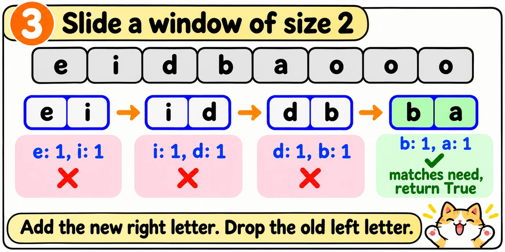
The Counter window stores the letters from left to right. If the window becomes longer than s1, we drop its left letter.
Here is how I'll explain the solution in an interview. Tap Build it to write the code one step at a time and see what I'll say.
The one idea to remember
Write the whole function from memory. The comments describe each job. A failed test gives a hint.
The first and last lines are written. Fill both gaps inside the loop. Start each gap at the left edge.
from collections import Counterdef checkInclusion(s1, s2): need = Counter(s1) window = Counter() left = 0 for right in range(len( added = s2[right] window[added] += 1s2)):
return False
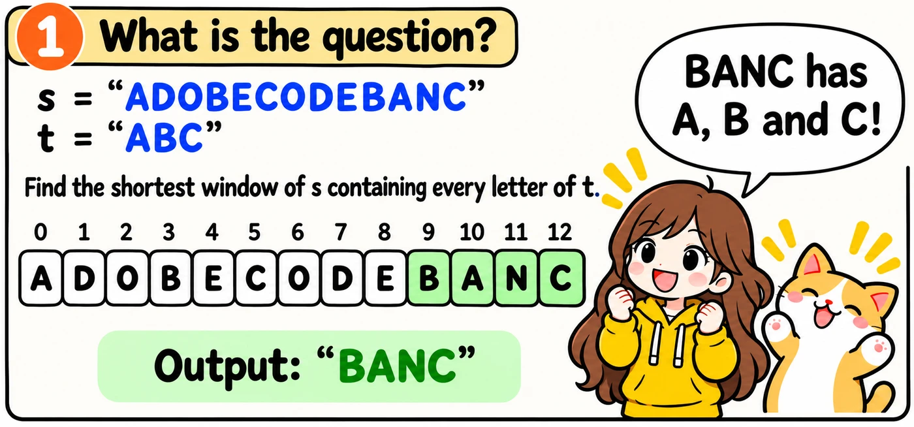
We want the shortest window of s containing every letter of t, including repeats. If none works, we return an empty string.
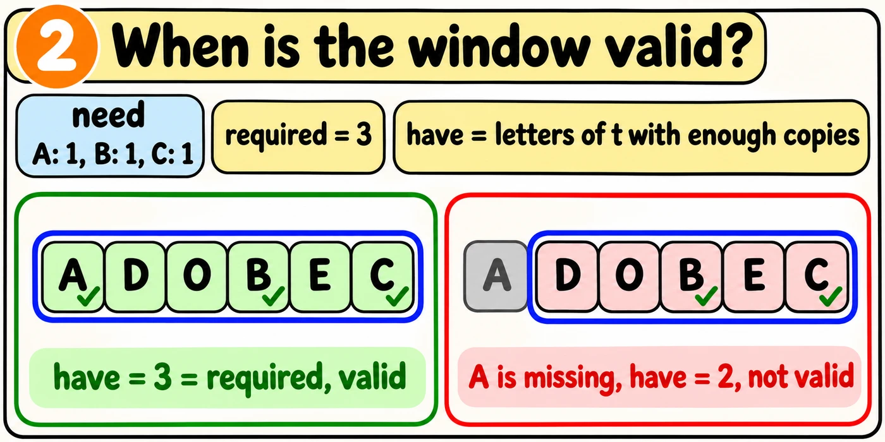
The Counter need stores the letters of t. The variable required is the number of different needed letters. The variable have counts how many have enough copies in window.
The window is valid when have == required. We increase have only when a count exactly reaches its need. Extra copies do not count twice.
Here t is "AAB", so need is {A: 2, B: 1}. The window has one A and one B. What is have?
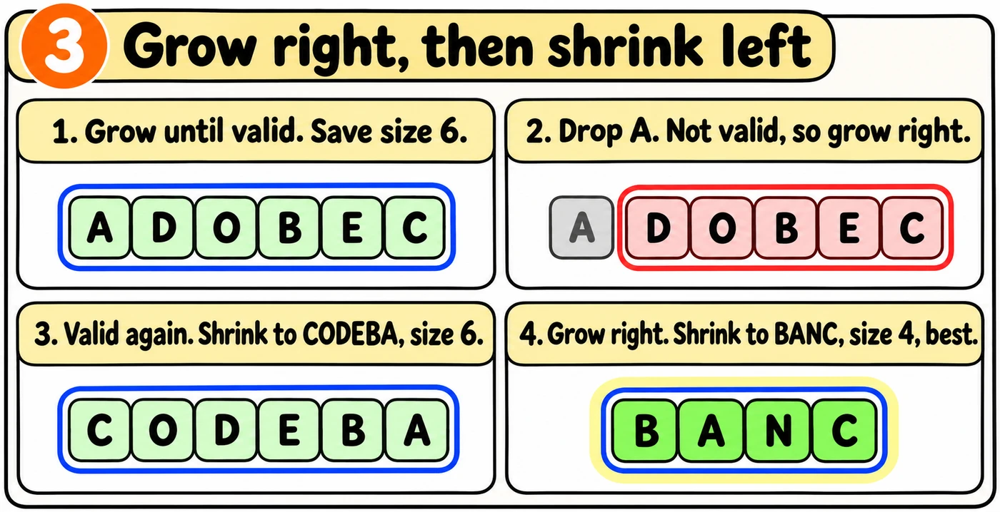
We grow right until the window is valid. Then we shrink from left while it stays valid. Watch the code run on s = "AABC" and t = "ABC". Press Next for each step.
from collections import Counterdef minWindow(s, t): need = Counter(t) window = Counter() have = 0 required = len(need) best_left = 0 best_size = float('inf') left = 0 for right in range(len( added = s[right] window[added] += 1 if window[added] == need[added]: have += 1 # valid: shrink from the left while have == required: size = right - left + 1 if size < best_size: best_size = size best_left = left gone = s[left] window[gone] -= 1 if window[gone] < need[gone]: have -= 1 left += 1 if best_size == float(s)): 'inf'): return "" end = best_left + best_size return s[best_left:end]
Here is how I'll explain the solution in an interview. Tap Build it to write the code one step at a time and see what I'll say.
The one idea to remember
Write the whole function from memory. The comments describe each job. A failed test gives a hint.
Most of the code is written. Fill all three gaps. Start each gap at the left edge.
from collections import Counterdef minWindow(s, t): need = Counter(t) window = Counter() have = 0 required = len(need) best_left = 0 best_size = float('inf') left = 0 for right in range(len( added = s[right] window[added] += 1s)):
while have == required:
if best_size == float('inf'): return "" end = best_left + best_size return s[best_left:end]
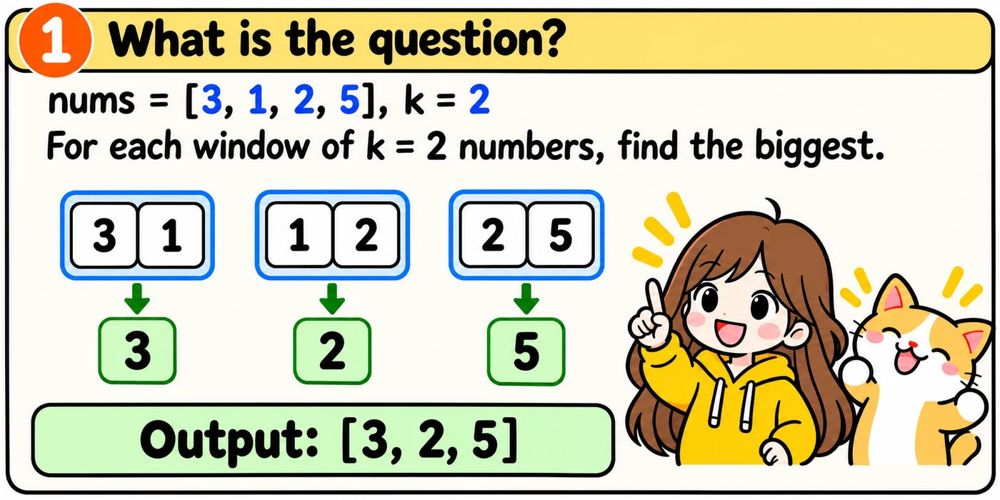
Each window has k numbers. We want the biggest number in every window.
Checking every number in every window is slow. We use a queue of numbers that can still be the biggest. The queue is a deque, so we can quickly change both ends.
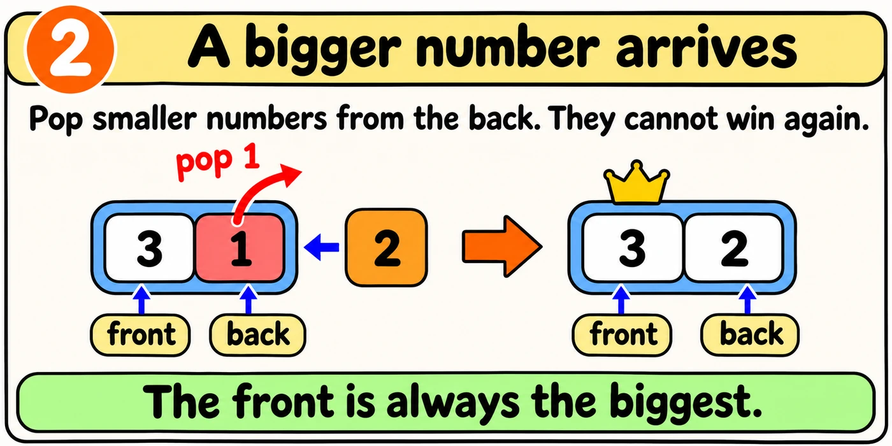
The queue goes from biggest at the front to smallest at the back. The front is the biggest number in the window.
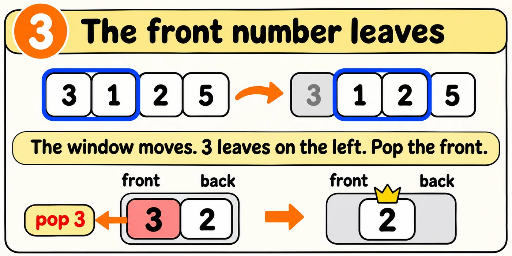
We store numbers, not positions. When the number leaving the window equals the front, we pop the front.
The queue holds [5, 3]. Then 4 arrives. What is the queue now?
Watch the code run on nums = [3, 1, 2, 5] with k = 2. Press Next for each step.
from collections import dequedef maxSlidingWindow(nums, k): queue = deque() result = [] for right in range(len( new = nums[right] # smaller numbers can never win while queue and queue[-1] < new: queue.pop(nums)): ) queue.append(new) # drop the one that fell out left = right - k + 1 if left > 0: gone = nums[left - 1] if queue[0] == gone: queue.popleft() if left >= 0: result.append(queue[0]) return result
Here is how I'll explain the solution in an interview. Tap Build it to write the code one step at a time and see what I'll say.
The one idea to remember
Write the whole function from memory. The comments describe each job. A failed test gives a hint.
Most of the code is written. Fill all three gaps. Start each gap at the left edge.
from collections import dequedef maxSlidingWindow(nums, k): queue = deque() result = [] for right in range(len( new = nums[right]nums)):
queue.append(new) left = right - k + 1
return result